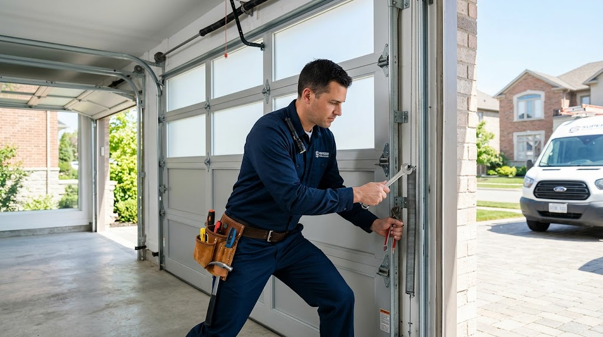

Local Garage Door Specialists
Fast, dependable repairs with honest pricing. Get a Free Estimate
When your garage door stops working, you need a company that responds quickly and fixes the problem correctly the first time. Madison Quality Garage Door Repair proudly serves homeowners across Madison and the surrounding Madison Metro with dependable garage door repair, spring replacement, opener installation, cable repair, and complete garage door installation services. We understand how important a working garage door is for your home's security, convenience, and daily routine.
Our company was founded by lifelong Madison resident Aaron Mitchell after more than a decade repairing residential garage doors throughout Dane County. Aaron believed homeowners deserved a company that showed up on time, explained repairs honestly, and never pressured customers into unnecessary replacements. Today our experienced technicians continue that same commitment by providing quality workmanship, premium parts, and friendly customer service on every visit.
Every technician receives ongoing training on today's garage door systems, openers, springs, rollers, tracks, and safety features. Whether your garage door is making loud noises, refusing to open, hanging crooked, or has completely stopped working, we'll carefully diagnose the issue and recommend the most cost-effective solution.
We proudly serve Madison, Sun Prairie, Verona, Middleton, Oregon, McFarland, Cottage Grove, and nearby communities throughout the Madison Metro. Our goal is simple: provide dependable workmanship, honest communication, and long-lasting repairs that restore your garage door's safe operation.
More about usFrom simple repairs to complete door replacements, we provide comprehensive residential garage door services designed to keep your home safe, secure, and operating smoothly.
Fast, dependable garage door repairs for homes throughout the Madison Metro.
Learn more →Professional garage door spring replacement for safe, reliable operation.
Learn more →Upgrade your home with a professionally installed new garage door.
Learn more →Reliable garage door opener installation with modern convenience and quiet performance.
Learn more →Safe garage door cable replacement and repair performed by experienced technicians.
Learn more →Because we're a dedicated service-area business, we travel throughout the Madison Metro to bring professional garage door service directly to homeowners. No matter where you live within our service area, you can expect prompt scheduling, professional workmanship, and dependable communication.
Whether your garage door needs emergency repairs or you're planning a complete upgrade, our local team is ready to help.
See all service areasWe're proud to serve the communities where we live and work, delivering personalized service with genuine local knowledge.
We explain every repair clearly and only recommend services your garage door actually needs.
We install dependable replacement components designed for long-lasting performance.
Our trained professionals work on virtually every major residential garage door and opener brand.
Common signs include loud noises, slow movement, uneven travel, broken springs, damaged cables, or difficulty opening and closing. A professional inspection can identify the cause before it becomes a larger problem.
Yes. We replace worn and broken torsion and extension springs using properly matched replacement parts for safe operation.
Many problems can be repaired economically. If the door has extensive structural damage or is nearing the end of its lifespan, replacement may provide better long-term value.
Absolutely. We install modern openers with dependable performance, quiet operation, and convenient smart features.
We proudly serve Madison and surrounding communities throughout the Madison Metro including Sun Prairie, Verona, Middleton, Oregon, McFarland, and Cottage Grove.
Schedule dependable garage door service with your local Madison team today. [CTA:estimate]
Free — no obligations